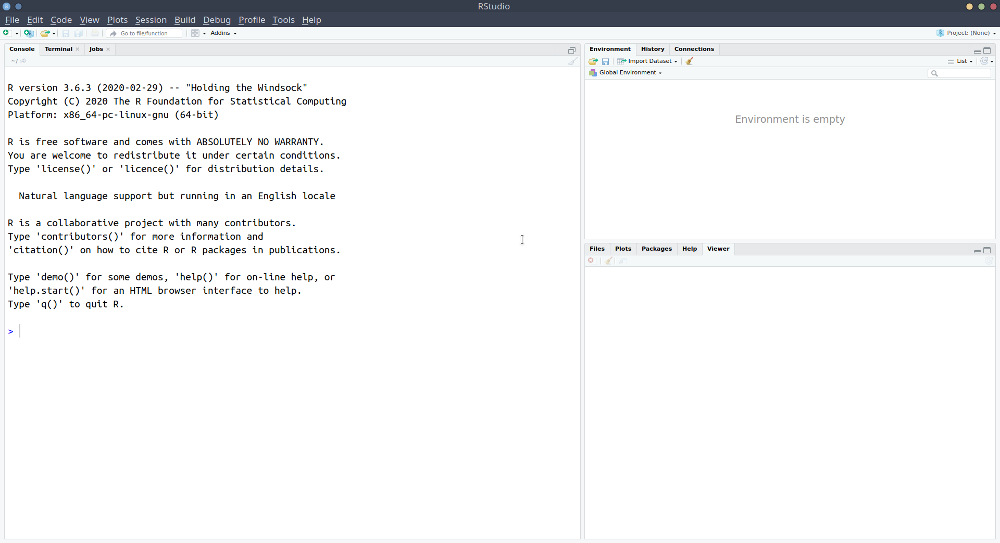
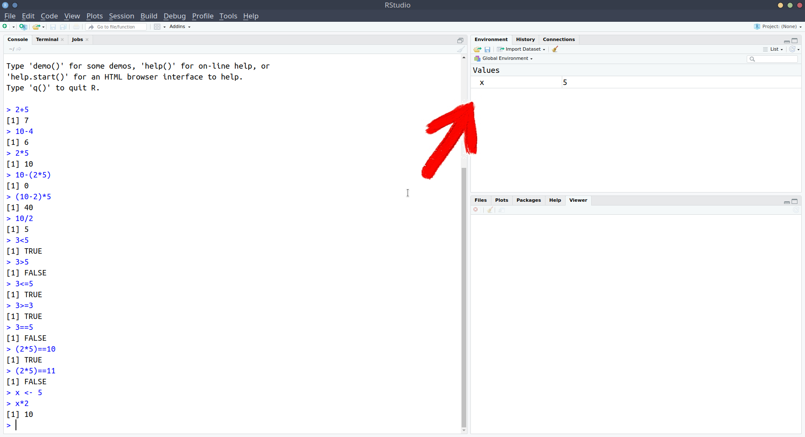
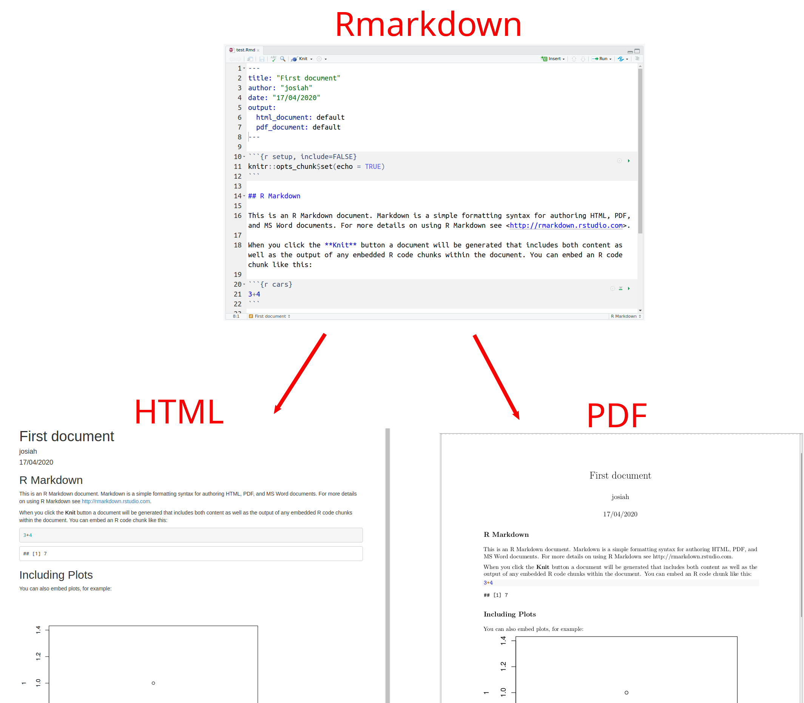
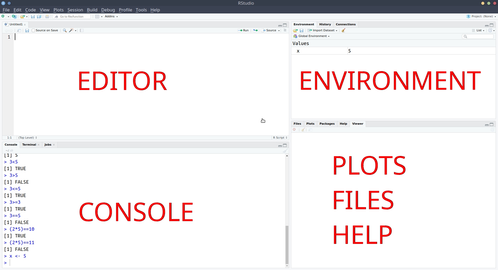
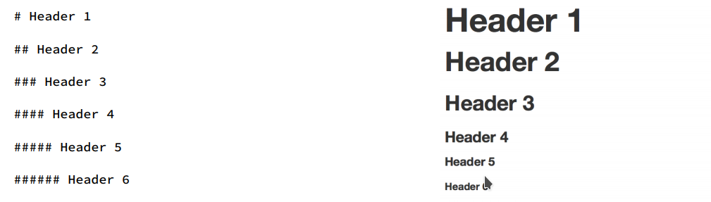
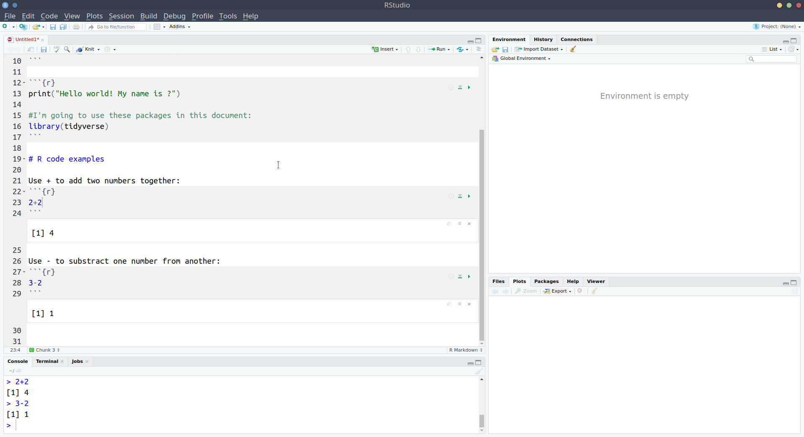

Chapter 1 Collecting Data
Learning Objectives
- LO1: Install R & Rstudio, and get comfortable with the layout
- LO2: Learn about how data is stored in R
- LO3: Produce your first Rmarkdown document
You have two options for how you use R and Rstudio:
A: Download R and Rstudio onto your computer (recommended)
B: Use R and Rstudio online via a web browser (for people using chromebooks).
Checklist for today
- EITHER:
- Option A: Install R and Rstudio
- Option B: Register for RstudioCloud (free) and log in
- Start a new project for the course
- Change a few Rstudio settings (recommended)
- Install some R packages (the “tidyverse”)
- Create a new Rmarkdown document
- Complete today’s tasks and exercises
- Compile your Rmarkdown document
- Celebrate!
Introducing R & Rstudio
Installing R & Rstudio


First look at Rstudio
Okay, now you should have a project open, and you should see something which looks more or less like the below, where there are several little windows.

We’re going to explore what each of these little windows offer by just diving in and starting to do things.
R as a calculator
Starting in the left-hand window, you’ll notice the little blue arrow >. This is where we R code gets executed. Type 2+2, and hit enter ↵
It’s a calculator!
Let’s work through some of the basic operations (adding, subtracting etc).
Try these commands yourself:
2+510-42*510-(2*5)(10-2)*510/2
A little note
Whenever you see the blue arrow (>), it means R is ready and waiting for a command.
If you type 10+ and press enter, you’ll see that instead of > you are left with +. This means that R is waiting for more. Either give it more, or cancel the command by pressing the escape key on your keyboard.
Now let’s take a sidestep.
As well as performing calculations, we can ask R things, such as “Is 3 less than 5?”:
[1] TRUETry the following:
3>5- “is 3 greater than 5?”3<=5- “is 3 less than OR equal to 5?”3>=3- “is 3 greater than OR equal to 3?”3==5- “is 3 equal to 5?”(2*5)==10“is 2 times 5 equal to 10?”(2*5)!=11“is 2 times 5 NOT equal to 11?”
R as a calculator with a memory
We can also store things in R’s memory, and to that we just need to give them a name.
Type x <- 5 and press enter.
What has happened? We’ve just stored something named x which has the value 5.
We can now refer to the name and it will give us the value!
Try typing x and hitting enter. It should give you the number 5.
What about x*3?
Storing things in R
The <- symbol is used to assign a value to a named object.
[ name ] <- [ value ]
Note, there are a few rules about names in R:
- No spaces - the spaces around the
<-don’t matter, but spaces inside a name are not allowed:lucky_number <- 5✔lucky number <- 5❌
- Names must start with a letter:
lucky_number <- 5✔1lucky_number <- 5❌
- Case sensitive:
lucky_numberis different fromLucky_Number
- Reserved words - there is a set of words you can’t use as names, including: if, else, for, in, TRUE, FALSE, NULL, NA, NaN, function
(Don’t worry about remembering these, R will tell you if you make the mistake of trying to name a variable after one of these).
You might have noticed that something else happened when you executed the code x<-5.
The thing we named x with a value of 5 suddenly appeared in the top-right window:

Okay, so we’ve now used a couple of the windows - we’ve executed R code in the console, and we’ve kept track of the things which we’ve named in the environment:

Notice that in the screenshot above, we have moved the console down to the bottom-left, and introduced a new window above it. This is the one that we’re going to talk about next.
Rscripts and Rmarkdown
Recap: We’ve just been executing R code in the console, and learned about how we can store things in R’s memory (the environment) by assigning a name to them.
But what if we want to edit our code?
Whatever we write in the console just disappears upwards. What if we want to change things we did earlier on?
Well, we can write our code before sending it to the console to be executed!!
R scripts
- Open an R script
- File > New File > R script
- Copy and paste the following into the R script
- With your text-cursor (blinking vertical line) on the top line:
- Ctrl + enter (Windows)
- Cmd + enter (MacOS)
Notice what has happened - it has sent the command x<-210 to the console, where it has been executed, and x is now in your environment.
Additionally, it has moved the text-cursor to the next line.
Press Ctrl + enter (Windows) or Cmd + enter (MacOS) again. Twice.
Then, change x to some other number in your R script, and run the lines again (starting at the top).
Add the following line to your Rscript and execute it (send it to the console pressing Ctrl/Cmd + Enter):
A very basic plot should have appeared in the bottom-right of Rstudio. The bottom-right window actually does some other useful things.
- Save the Rscript you have been working with:
- File > Save
- give it an appropriate name, and click save.
- Check that you can now see that file in the project, by clicking on the “Files” tab of the bottom-right window.
Rmarkdown
In addition to R scripts, there is another type of document we can create, known as an “Rmarkdown”.
Rmarkdown documents combines the analytical power of R and the utility of a text-processor.
We can now have one document which contains all of our analysis as well as our written text, and can be compiled into a nicely formatted report.
This saves us doing analysis in R and copying results across to Microsoft Word. It ensures our report accurately reflects our analysis.
Everything that you’re reading now has all been written in Rmarkdown!
We’re going to use Rmarkdown documents throughout this course.
We’ll get into it how to write them lower down, but Rmarkdown documents are basically text along with “code-chunks”. In the example below, you can see the grey boxes indicating the R code, with text in between.
We can then compile the document into either a .pdf or a .html.

Recap
Okay, so we’ve now seen all of the different windows in Rstudio in action:
- The console is where R code gets executed
- The environment is R’s memory, you can assign something a name and store it here, and then refer to it by name in your code.
- The editor is where you can write and edit R code. You can then send this to the console for it to be executed.
- The bottom-right window shows you the plots that you create, the files in your project, and some other things (we’ll get to these later).

Take a breather!
Below are a couple of our recommended settings for you to change as you begin your journey in R. After you’ve changed them, take a 5 minute break before moving on to learning about how we store data in R.
Useful Settings 1: Clean environments
As you use R more, you will store lots of things with different names. Throughout this course alone, you’ll probably name hundreds of different things.
This could quickly get messy within our project.
We can make it so that we have a clean environment each time you open Rstudio. This will be really handy.
- In the top menu, click
Tools > Global Options… - Then, untick the box for “Restore .RData into workspace at startup”, and change “Save workspace to .RData on exit” to “Never”:

Useful Settings 2: Wrapping code
In the editor, you might end up with a line of code which is really long:
You can make Rstudio ‘wrap’ the line, so that you can see it all, without having to scroll.
x <- 1+2+3+6+3+45+8467+356+8565+34+34+657+6756+456+456+54+3+78+3+3476+8+4+67
+456+567+3+34575+45+2+6+9+5+6- In the top menu, click
Tools > Global Options… - In the left menu of the box, click “Code”
- Tick the box for “Soft-wrap R source files”
Data in R
We’ve already seen how to assign a value to a name/symbol using <-.
However, we’ve only seen how to assign a single number, e.g, x<-5.
Sequences (“Vectors”) of values
To assign a sequence of values to R, we combine the values using c().
[1] 1 5 3 7[1] 6 10 8 12Values don’t have to be numbers, but note what happens when we try to add 5 to a sequence which includes some non-numbers:
Matrices
We will often have several vectors in which the 1st value of each vector corresponds to the same observation, for instance:
These
vector matrix data.frame tibble
accessors [], $
More Tasks
Installing R packages
Alongside the basic installation of R and Rstudio, there are many add-on packages which the R community create and maintain.
The thousands of packages are part of what makes R such a powerful and useful tool - there is a package for almost everything you could want to do in R.
In order to be able to write and compile Rmarkdown documents (and do a whole load of other things which we are going to need throughout the course) we are now going to install a set of packages known collectively as the “tidyverse”.
In the console, type install.packages("tidyverse") and hit enter.
Lots of red text will come up, and it will take a bit of time.
When it has finished, and R is ready for you to use again, you will see the little blue arrow >.
Starting a new .Rmd document
Open a new Rmarkdown document.
File > New File > R Markdown..
When the box pops-up, give a title of your choice (“Intro lab”, maybe?) and your name as the author.
The file which opens will have some template stuff in it. Delete everything below the first code chunk to start with a fresh document:

Insert a new code chunk by either using the Insert button in the top right of the document, and clicking R, or typing Ctrl + Alt + i
Inside the chunk, type:
print("Hello world! My name is ?").
To execute the code inside the chunk, you can either: + do as you did in the R script - put the text-cursor on the first line, and hit Ctrl/Cmd + Enter to run the lines sequentially + click the little green arrow at the top right of your code-chunk to run all of the code inside the chunk.
You can see that the output gets printed below.
Using R packages
We’re going to use some functions which are in the tidyverse package, which already installed above.
However, it’s not enough just to install it - to actually use the package, we need to load it using library(tidyverse).
When writing analysis code, we want it to be reproducible - we want to be able to give somebody else our code and the data, and ensure that they can get the same results. To do this, we need to show what packages we use.
It is good practice to load any packages you use at the top of your code.
In your first code chunk, type:
and run the chunk.
Comments in code
Note that # in R code makes that line a comment, which basically means that R will ignore the line. Comments are useful for you to remind yourself of what your code is doing.
Below the code chunk, add a new line with the following:
# R code examples
Note that when the # is used in a Rmarkdown file, outside of a code-chunk, it will make that line a heading when we finally get to compiling the document. Below, what you see on the left will be compiled to look like those on the right:

In your Rmarkdown document, give an explanation of what each of the following does in R. Write the explanation, and give an example in a code chunk.
+-*/()^<-=<><=>===!=data.frame()c()[]$
You can see an example of the first few below: 
Storing data
Add a new heading by typing the following:
# Vectors and dataframes
Remember: We make headings using the # outside of a code chunk.
In a new code chunk, do the following:
- store the following numbers as an object in R:
4,7,3,1,8,9,5,2,2,6,9,9,5,20
- Try using the function
sum(), with the name of your object inside the brackets.
Using the square brackets - [] - pull out the 2nd, 4th and 6th values in the object you just created.
Hint: You will need to put inside the square brackets a sequence of numbers. How do we combine numbers in to a sequence in R? using c()!
In a new code-chunk, store the names and birth-years of the Beatle in the appropriate format in R. Name it beatles.
- John was born in 1940
- Paul was born in 1942
- George was born in 1943
- Ringo was born in 1940
Hint: We’ve got two sets of values here: the names and the birth-years. The easiest way to think of this would be to have a row for each Beatle, and a column for each of name and birth-year.
Check dimensions of the object using dim(). How many rows and how many columns are there?
Reading in external data
So far, we’ve been manually inputting our data. However, R can read in data which has been created elsewhere (like in excel, or by some software which is used to present participants with experiments).
TODO - link to data we’re going to use next couple of weeks
First, click on the following link: link
It should open a webpage and show you a dataset. There are two things to note.
- the values are separated by commas
- the url (in the top bar of your browser) ends with .csv.
This stands for ‘comma separated value’.
The tidyverse package which we loaded at the top has a function to read this sort of data: read_csv().
Read the data into R. You can do this by giving read_csv() the url.
Hint: If you just type:
# A tibble: 192 x 3
date field pct_women_majors
<dbl> <chr> <dbl>
1 1966 Computer.science 0.146
2 1967 Computer.science 0.108
3 1968 Computer.science 0.12
4 1969 Computer.science 0.13
5 1970 Computer.science 0.129
6 1971 Computer.science 0.136
7 1972 Computer.science 0.136
8 1973 Computer.science 0.149
9 1974 Computer.science 0.164
10 1975 Computer.science 0.19
# … with 182 more rowsIt will print out the dataset, but it won’t store it in R for you to do things with. To do that, we want to assign a name to the data:
Note that it now turns up in the Environment pane of Rstudio.
TODO image
Check how many rows and columns you have in the dataset.
You can do this with the dim() function.
Using the square brackets, show the 167th row, with all columns.
Remember: When you are using [] with a dataframe, you specify data[rows, columns]. If you leave either rows or columns blank it will give all of them - for instance, data[ , columns] will give you all rows for some specified columns.
By now, you should have an Rmardkown document ( .Rmd ) with your answers to the tasks we’ve been through today.
Compile the document by clicking on the Knit button at the top. The little arrow to the right allows you to compile to either .pdf or .html.
Checklist for today
- EITHER:
- Option A: Install R and Rstudio ✔
- Option B: Register for RstudioCloud (free) and log in ✔
- Start a new project for the course ✔
- Change a few Rstudio settings (recommended) ✔
- Install some R packages (the “tidyverse”) ✔
- Create a new Rmarkdown document ✔
- Complete today’s tasks and exercises ✔
- Compile your Rmarkdown document ✔
- Celebrate! ✔ 🎉
Glossary
- console
- environment
- editor
- rmarkdown